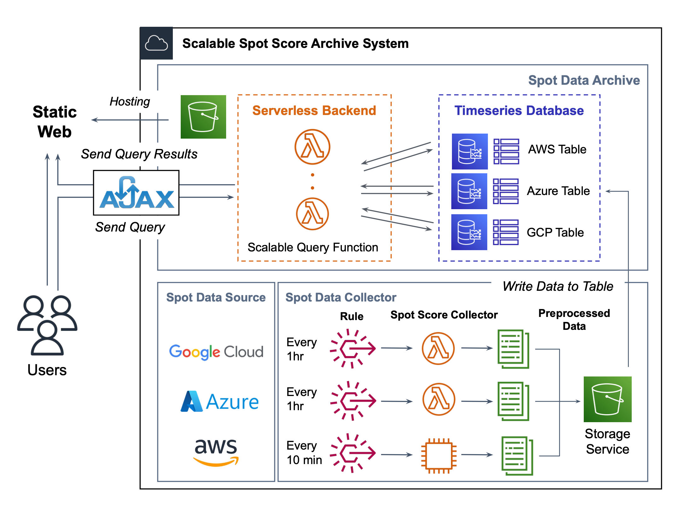

<html><head><meta http-equiv="Content-Type" content="text/html; charset=utf-8"/><title>SpotLake: 다양한 클라우드 업체의 스팟 데이터 수집 시스템 개발 및 분석</title><style>
/* cspell:disable-file */
/* webkit printing magic: print all background colors */
html {
	-webkit-print-color-adjust: exact;
}
* {
	box-sizing: border-box;
	-webkit-print-color-adjust: exact;
}

html,
body {
	margin: 0;
	padding: 0;
}
@media only screen {
	body {
		margin: 2em auto;
		max-width: 900px;
		color: rgb(55, 53, 47);
	}
}

body {
	line-height: 1.5;
	white-space: pre-wrap;
}

a,
a.visited {
	color: inherit;
	text-decoration: underline;
}

.pdf-relative-link-path {
	font-size: 80%;
	color: #444;
}

h1,
h2,
h3 {
	letter-spacing: -0.01em;
	line-height: 1.2;
	font-weight: 600;
	margin-bottom: 0;
}

.page-title {
	font-size: 2.5rem;
	font-weight: 700;
	margin-top: 0;
	margin-bottom: 0.75em;
}

h1 {
	font-size: 1.875rem;
	margin-top: 1.875rem;
}

h2 {
	font-size: 1.5rem;
	margin-top: 1.5rem;
}

h3 {
	font-size: 1.25rem;
	margin-top: 1.25rem;
}

.source {
	border: 1px solid #ddd;
	border-radius: 3px;
	padding: 1.5em;
	word-break: break-all;
}

.callout {
	border-radius: 3px;
	padding: 1rem;
}

figure {
	margin: 1.25em 0;
	page-break-inside: avoid;
}

figcaption {
	opacity: 0.5;
	font-size: 85%;
	margin-top: 0.5em;
}

mark {
	background-color: transparent;
}

.indented {
	padding-left: 1.5em;
}

hr {
	background: transparent;
	display: block;
	width: 100%;
	height: 1px;
	visibility: visible;
	border: none;
	border-bottom: 1px solid rgba(55, 53, 47, 0.09);
}

img {
	max-width: 100%;
}

@media only print {
	img {
		max-height: 100vh;
		object-fit: contain;
	}
}

@page {
	margin: 1in;
}

.collection-content {
	font-size: 0.875rem;
}

.column-list {
	display: flex;
	justify-content: space-between;
}

.column {
	padding: 0 1em;
}

.column:first-child {
	padding-left: 0;
}

.column:last-child {
	padding-right: 0;
}

.table_of_contents-item {
	display: block;
	font-size: 0.875rem;
	line-height: 1.3;
	padding: 0.125rem;
}

.table_of_contents-indent-1 {
	margin-left: 1.5rem;
}

.table_of_contents-indent-2 {
	margin-left: 3rem;
}

.table_of_contents-indent-3 {
	margin-left: 4.5rem;
}

.table_of_contents-link {
	text-decoration: none;
	opacity: 0.7;
	border-bottom: 1px solid rgba(55, 53, 47, 0.18);
}

table,
th,
td {
	border: 1px solid rgba(55, 53, 47, 0.09);
	border-collapse: collapse;
}

table {
	border-left: none;
	border-right: none;
}

th,
td {
	font-weight: normal;
	padding: 0.25em 0.5em;
	line-height: 1.5;
	min-height: 1.5em;
	text-align: left;
}

th {
	color: rgba(55, 53, 47, 0.6);
}

ol,
ul {
	margin: 0;
	margin-block-start: 0.6em;
	margin-block-end: 0.6em;
}

li > ol:first-child,
li > ul:first-child {
	margin-block-start: 0.6em;
}

ul > li {
	list-style: disc;
}

ul.to-do-list {
	padding-inline-start: 0;
}

ul.to-do-list > li {
	list-style: none;
}

.to-do-children-checked {
	text-decoration: line-through;
	opacity: 0.375;
}

ul.toggle > li {
	list-style: none;
}

ul {
	padding-inline-start: 1.7em;
}

ul > li {
	padding-left: 0.1em;
}

ol {
	padding-inline-start: 1.6em;
}

ol > li {
	padding-left: 0.2em;
}

.mono ol {
	padding-inline-start: 2em;
}

.mono ol > li {
	text-indent: -0.4em;
}

.toggle {
	padding-inline-start: 0em;
	list-style-type: none;
}

/* Indent toggle children */
.toggle > li > details {
	padding-left: 1.7em;
}

.toggle > li > details > summary {
	margin-left: -1.1em;
}

.selected-value {
	display: inline-block;
	padding: 0 0.5em;
	background: rgba(206, 205, 202, 0.5);
	border-radius: 3px;
	margin-right: 0.5em;
	margin-top: 0.3em;
	margin-bottom: 0.3em;
	white-space: nowrap;
}

.collection-title {
	display: inline-block;
	margin-right: 1em;
}

.page-description {
	margin-bottom: 2em;
}

.simple-table {
	margin-top: 1em;
	font-size: 0.875rem;
	empty-cells: show;
}
.simple-table td {
	height: 29px;
	min-width: 120px;
}

.simple-table th {
	height: 29px;
	min-width: 120px;
}

.simple-table-header-color {
	background: rgb(247, 246, 243);
	color: black;
}
.simple-table-header {
	font-weight: 500;
}

time {
	opacity: 0.5;
}

.icon {
	display: inline-block;
	max-width: 1.2em;
	max-height: 1.2em;
	text-decoration: none;
	vertical-align: text-bottom;
	margin-right: 0.5em;
}

img.icon {
	border-radius: 3px;
}

.user-icon {
	width: 1.5em;
	height: 1.5em;
	border-radius: 100%;
	margin-right: 0.5rem;
}

.user-icon-inner {
	font-size: 0.8em;
}

.text-icon {
	border: 1px solid #000;
	text-align: center;
}

.page-cover-image {
	display: block;
	object-fit: cover;
	width: 100%;
	max-height: 30vh;
}

.page-header-icon {
	font-size: 3rem;
	margin-bottom: 1rem;
}

.page-header-icon-with-cover {
	margin-top: -0.72em;
	margin-left: 0.07em;
}

.page-header-icon img {
	border-radius: 3px;
}

.link-to-page {
	margin: 1em 0;
	padding: 0;
	border: none;
	font-weight: 500;
}

p > .user {
	opacity: 0.5;
}

td > .user,
td > time {
	white-space: nowrap;
}

input[type="checkbox"] {
	transform: scale(1.5);
	margin-right: 0.6em;
	vertical-align: middle;
}

p {
	margin-top: 0.5em;
	margin-bottom: 0.5em;
}

.image {
	border: none;
	margin: 1.5em 0;
	padding: 0;
	border-radius: 0;
	text-align: center;
}

.code,
code {
	background: rgba(135, 131, 120, 0.15);
	border-radius: 3px;
	padding: 0.2em 0.4em;
	border-radius: 3px;
	font-size: 85%;
	tab-size: 2;
}

code {
	color: #eb5757;
}

.code {
	padding: 1.5em 1em;
}

.code-wrap {
	white-space: pre-wrap;
	word-break: break-all;
}

.code > code {
	background: none;
	padding: 0;
	font-size: 100%;
	color: inherit;
}

blockquote {
	font-size: 1.25em;
	margin: 1em 0;
	padding-left: 1em;
	border-left: 3px solid rgb(55, 53, 47);
}

.bookmark {
	text-decoration: none;
	max-height: 8em;
	padding: 0;
	display: flex;
	width: 100%;
	align-items: stretch;
}

.bookmark-title {
	font-size: 0.85em;
	overflow: hidden;
	text-overflow: ellipsis;
	height: 1.75em;
	white-space: nowrap;
}

.bookmark-text {
	display: flex;
	flex-direction: column;
}

.bookmark-info {
	flex: 4 1 180px;
	padding: 12px 14px 14px;
	display: flex;
	flex-direction: column;
	justify-content: space-between;
}

.bookmark-image {
	width: 33%;
	flex: 1 1 180px;
	display: block;
	position: relative;
	object-fit: cover;
	border-radius: 1px;
}

.bookmark-description {
	color: rgba(55, 53, 47, 0.6);
	font-size: 0.75em;
	overflow: hidden;
	max-height: 4.5em;
	word-break: break-word;
}

.bookmark-href {
	font-size: 0.75em;
	margin-top: 0.25em;
}

.sans { font-family: ui-sans-serif, -apple-system, BlinkMacSystemFont, "Segoe UI Variable Display", "Segoe UI", Helvetica, "Apple Color Emoji", Arial, sans-serif, "Segoe UI Emoji", "Segoe UI Symbol"; }
.code { font-family: "SFMono-Regular", Menlo, Consolas, "PT Mono", "Liberation Mono", Courier, monospace; }
.serif { font-family: Lyon-Text, Georgia, ui-serif, serif; }
.mono { font-family: iawriter-mono, Nitti, Menlo, Courier, monospace; }
.pdf .sans { font-family: Inter, ui-sans-serif, -apple-system, BlinkMacSystemFont, "Segoe UI Variable Display", "Segoe UI", Helvetica, "Apple Color Emoji", Arial, sans-serif, "Segoe UI Emoji", "Segoe UI Symbol", 'Twemoji', 'Noto Color Emoji', 'Noto Sans CJK JP'; }
.pdf:lang(zh-CN) .sans { font-family: Inter, ui-sans-serif, -apple-system, BlinkMacSystemFont, "Segoe UI Variable Display", "Segoe UI", Helvetica, "Apple Color Emoji", Arial, sans-serif, "Segoe UI Emoji", "Segoe UI Symbol", 'Twemoji', 'Noto Color Emoji', 'Noto Sans CJK SC'; }
.pdf:lang(zh-TW) .sans { font-family: Inter, ui-sans-serif, -apple-system, BlinkMacSystemFont, "Segoe UI Variable Display", "Segoe UI", Helvetica, "Apple Color Emoji", Arial, sans-serif, "Segoe UI Emoji", "Segoe UI Symbol", 'Twemoji', 'Noto Color Emoji', 'Noto Sans CJK TC'; }
.pdf:lang(ko-KR) .sans { font-family: Inter, ui-sans-serif, -apple-system, BlinkMacSystemFont, "Segoe UI Variable Display", "Segoe UI", Helvetica, "Apple Color Emoji", Arial, sans-serif, "Segoe UI Emoji", "Segoe UI Symbol", 'Twemoji', 'Noto Color Emoji', 'Noto Sans CJK KR'; }
.pdf .code { font-family: Source Code Pro, "SFMono-Regular", Menlo, Consolas, "PT Mono", "Liberation Mono", Courier, monospace, 'Twemoji', 'Noto Color Emoji', 'Noto Sans Mono CJK JP'; }
.pdf:lang(zh-CN) .code { font-family: Source Code Pro, "SFMono-Regular", Menlo, Consolas, "PT Mono", "Liberation Mono", Courier, monospace, 'Twemoji', 'Noto Color Emoji', 'Noto Sans Mono CJK SC'; }
.pdf:lang(zh-TW) .code { font-family: Source Code Pro, "SFMono-Regular", Menlo, Consolas, "PT Mono", "Liberation Mono", Courier, monospace, 'Twemoji', 'Noto Color Emoji', 'Noto Sans Mono CJK TC'; }
.pdf:lang(ko-KR) .code { font-family: Source Code Pro, "SFMono-Regular", Menlo, Consolas, "PT Mono", "Liberation Mono", Courier, monospace, 'Twemoji', 'Noto Color Emoji', 'Noto Sans Mono CJK KR'; }
.pdf .serif { font-family: PT Serif, Lyon-Text, Georgia, ui-serif, serif, 'Twemoji', 'Noto Color Emoji', 'Noto Serif CJK JP'; }
.pdf:lang(zh-CN) .serif { font-family: PT Serif, Lyon-Text, Georgia, ui-serif, serif, 'Twemoji', 'Noto Color Emoji', 'Noto Serif CJK SC'; }
.pdf:lang(zh-TW) .serif { font-family: PT Serif, Lyon-Text, Georgia, ui-serif, serif, 'Twemoji', 'Noto Color Emoji', 'Noto Serif CJK TC'; }
.pdf:lang(ko-KR) .serif { font-family: PT Serif, Lyon-Text, Georgia, ui-serif, serif, 'Twemoji', 'Noto Color Emoji', 'Noto Serif CJK KR'; }
.pdf .mono { font-family: PT Mono, iawriter-mono, Nitti, Menlo, Courier, monospace, 'Twemoji', 'Noto Color Emoji', 'Noto Sans Mono CJK JP'; }
.pdf:lang(zh-CN) .mono { font-family: PT Mono, iawriter-mono, Nitti, Menlo, Courier, monospace, 'Twemoji', 'Noto Color Emoji', 'Noto Sans Mono CJK SC'; }
.pdf:lang(zh-TW) .mono { font-family: PT Mono, iawriter-mono, Nitti, Menlo, Courier, monospace, 'Twemoji', 'Noto Color Emoji', 'Noto Sans Mono CJK TC'; }
.pdf:lang(ko-KR) .mono { font-family: PT Mono, iawriter-mono, Nitti, Menlo, Courier, monospace, 'Twemoji', 'Noto Color Emoji', 'Noto Sans Mono CJK KR'; }
.highlight-default {
	color: rgba(55, 53, 47, 1);
}
.highlight-gray {
	color: rgba(120, 119, 116, 1);
	fill: rgba(120, 119, 116, 1);
}
.highlight-brown {
	color: rgba(159, 107, 83, 1);
	fill: rgba(159, 107, 83, 1);
}
.highlight-orange {
	color: rgba(217, 115, 13, 1);
	fill: rgba(217, 115, 13, 1);
}
.highlight-yellow {
	color: rgba(203, 145, 47, 1);
	fill: rgba(203, 145, 47, 1);
}
.highlight-teal {
	color: rgba(68, 131, 97, 1);
	fill: rgba(68, 131, 97, 1);
}
.highlight-blue {
	color: rgba(51, 126, 169, 1);
	fill: rgba(51, 126, 169, 1);
}
.highlight-purple {
	color: rgba(144, 101, 176, 1);
	fill: rgba(144, 101, 176, 1);
}
.highlight-pink {
	color: rgba(193, 76, 138, 1);
	fill: rgba(193, 76, 138, 1);
}
.highlight-red {
	color: rgba(212, 76, 71, 1);
	fill: rgba(212, 76, 71, 1);
}
.highlight-default_background {
	color: rgba(55, 53, 47, 1);
}
.highlight-gray_background {
	background: rgba(241, 241, 239, 1);
}
.highlight-brown_background {
	background: rgba(244, 238, 238, 1);
}
.highlight-orange_background {
	background: rgba(251, 236, 221, 1);
}
.highlight-yellow_background {
	background: rgba(251, 243, 219, 1);
}
.highlight-teal_background {
	background: rgba(237, 243, 236, 1);
}
.highlight-blue_background {
	background: rgba(231, 243, 248, 1);
}
.highlight-purple_background {
	background: rgba(244, 240, 247, 0.8);
}
.highlight-pink_background {
	background: rgba(249, 238, 243, 0.8);
}
.highlight-red_background {
	background: rgba(253, 235, 236, 1);
}
.block-color-default {
	color: inherit;
	fill: inherit;
}
.block-color-gray {
	color: rgba(120, 119, 116, 1);
	fill: rgba(120, 119, 116, 1);
}
.block-color-brown {
	color: rgba(159, 107, 83, 1);
	fill: rgba(159, 107, 83, 1);
}
.block-color-orange {
	color: rgba(217, 115, 13, 1);
	fill: rgba(217, 115, 13, 1);
}
.block-color-yellow {
	color: rgba(203, 145, 47, 1);
	fill: rgba(203, 145, 47, 1);
}
.block-color-teal {
	color: rgba(68, 131, 97, 1);
	fill: rgba(68, 131, 97, 1);
}
.block-color-blue {
	color: rgba(51, 126, 169, 1);
	fill: rgba(51, 126, 169, 1);
}
.block-color-purple {
	color: rgba(144, 101, 176, 1);
	fill: rgba(144, 101, 176, 1);
}
.block-color-pink {
	color: rgba(193, 76, 138, 1);
	fill: rgba(193, 76, 138, 1);
}
.block-color-red {
	color: rgba(212, 76, 71, 1);
	fill: rgba(212, 76, 71, 1);
}
.block-color-default_background {
	color: inherit;
	fill: inherit;
}
.block-color-gray_background {
	background: rgba(241, 241, 239, 1);
}
.block-color-brown_background {
	background: rgba(244, 238, 238, 1);
}
.block-color-orange_background {
	background: rgba(251, 236, 221, 1);
}
.block-color-yellow_background {
	background: rgba(251, 243, 219, 1);
}
.block-color-teal_background {
	background: rgba(237, 243, 236, 1);
}
.block-color-blue_background {
	background: rgba(231, 243, 248, 1);
}
.block-color-purple_background {
	background: rgba(244, 240, 247, 0.8);
}
.block-color-pink_background {
	background: rgba(249, 238, 243, 0.8);
}
.block-color-red_background {
	background: rgba(253, 235, 236, 1);
}
.select-value-color-uiBlue { background-color: rgba(35, 131, 226, .07); }
.select-value-color-pink { background-color: rgba(245, 224, 233, 1); }
.select-value-color-purple { background-color: rgba(232, 222, 238, 1); }
.select-value-color-green { background-color: rgba(219, 237, 219, 1); }
.select-value-color-gray { background-color: rgba(227, 226, 224, 1); }
.select-value-color-transparentGray { background-color: rgba(227, 226, 224, 0); }
.select-value-color-translucentGray { background-color: rgba(0, 0, 0, 0.06); }
.select-value-color-orange { background-color: rgba(250, 222, 201, 1); }
.select-value-color-brown { background-color: rgba(238, 224, 218, 1); }
.select-value-color-red { background-color: rgba(255, 226, 221, 1); }
.select-value-color-yellow { background-color: rgba(253, 236, 200, 1); }
.select-value-color-blue { background-color: rgba(211, 229, 239, 1); }
.select-value-color-pageGlass { background-color: undefined; }
.select-value-color-washGlass { background-color: undefined; }

.checkbox {
	display: inline-flex;
	vertical-align: text-bottom;
	width: 16;
	height: 16;
	background-size: 16px;
	margin-left: 2px;
	margin-right: 5px;
}

.checkbox-on {
	background-image: url("data:image/svg+xml;charset=UTF-8,%3Csvg%20width%3D%2216%22%20height%3D%2216%22%20viewBox%3D%220%200%2016%2016%22%20fill%3D%22none%22%20xmlns%3D%22http%3A%2F%2Fwww.w3.org%2F2000%2Fsvg%22%3E%0A%3Crect%20width%3D%2216%22%20height%3D%2216%22%20fill%3D%22%2358A9D7%22%2F%3E%0A%3Cpath%20d%3D%22M6.71429%2012.2852L14%204.9995L12.7143%203.71436L6.71429%209.71378L3.28571%206.2831L2%207.57092L6.71429%2012.2852Z%22%20fill%3D%22white%22%2F%3E%0A%3C%2Fsvg%3E");
}

.checkbox-off {
	background-image: url("data:image/svg+xml;charset=UTF-8,%3Csvg%20width%3D%2216%22%20height%3D%2216%22%20viewBox%3D%220%200%2016%2016%22%20fill%3D%22none%22%20xmlns%3D%22http%3A%2F%2Fwww.w3.org%2F2000%2Fsvg%22%3E%0A%3Crect%20x%3D%220.75%22%20y%3D%220.75%22%20width%3D%2214.5%22%20height%3D%2214.5%22%20fill%3D%22white%22%20stroke%3D%22%2336352F%22%20stroke-width%3D%221.5%22%2F%3E%0A%3C%2Fsvg%3E");
}
	
</style></head><body><article id="16164f85-76d1-81db-a326-c93f76aeb6ea" class="page sans"><header><h1 class="page-title">SpotLake: 다양한 클라우드 업체의 스팟 데이터 수집 시스템 개발 및 분석</h1><p class="page-description"></p><table class="properties"><tbody><tr class="property-row property-row-text"><th><span class="icon property-icon"><svg role="graphics-symbol" viewBox="0 0 16 16" style="width:14px;height:14px;display:block;fill:rgba(55, 53, 47, 0.45);flex-shrink:0" class="typesText"><path d="M1.56738 3.25879H14.4258C14.7676 3.25879 15.0479 2.97852 15.0479 2.63672C15.0479 2.29492 14.7744 2.02148 14.4258 2.02148H1.56738C1.21875 2.02148 0.952148 2.29492 0.952148 2.63672C0.952148 2.97852 1.22559 3.25879 1.56738 3.25879ZM1.56738 6.84082H14.4258C14.7676 6.84082 15.0479 6.56055 15.0479 6.21875C15.0479 5.87695 14.7744 5.60352 14.4258 5.60352H1.56738C1.21875 5.60352 0.952148 5.87695 0.952148 6.21875C0.952148 6.56055 1.22559 6.84082 1.56738 6.84082ZM1.56738 10.4229H14.4258C14.7676 10.4229 15.0479 10.1426 15.0479 9.80078C15.0479 9.45898 14.7744 9.18555 14.4258 9.18555H1.56738C1.21875 9.18555 0.952148 9.45898 0.952148 9.80078C0.952148 10.1426 1.22559 10.4229 1.56738 10.4229ZM1.56738 14.0049H8.75879C9.10059 14.0049 9.38086 13.7246 9.38086 13.3828C9.38086 13.041 9.10742 12.7676 8.75879 12.7676H1.56738C1.21875 12.7676 0.952148 13.041 0.952148 13.3828C0.952148 13.7246 1.22559 14.0049 1.56738 14.0049Z"></path></svg></span>발표 학회</th><td>ACM THE WEB CONFERENCE 2023</td></tr><tr class="property-row property-row-text"><th><span class="icon property-icon"><svg role="graphics-symbol" viewBox="0 0 16 16" style="width:14px;height:14px;display:block;fill:rgba(55, 53, 47, 0.45);flex-shrink:0" class="typesText"><path d="M1.56738 3.25879H14.4258C14.7676 3.25879 15.0479 2.97852 15.0479 2.63672C15.0479 2.29492 14.7744 2.02148 14.4258 2.02148H1.56738C1.21875 2.02148 0.952148 2.29492 0.952148 2.63672C0.952148 2.97852 1.22559 3.25879 1.56738 3.25879ZM1.56738 6.84082H14.4258C14.7676 6.84082 15.0479 6.56055 15.0479 6.21875C15.0479 5.87695 14.7744 5.60352 14.4258 5.60352H1.56738C1.21875 5.60352 0.952148 5.87695 0.952148 6.21875C0.952148 6.56055 1.22559 6.84082 1.56738 6.84082ZM1.56738 10.4229H14.4258C14.7676 10.4229 15.0479 10.1426 15.0479 9.80078C15.0479 9.45898 14.7744 9.18555 14.4258 9.18555H1.56738C1.21875 9.18555 0.952148 9.45898 0.952148 9.80078C0.952148 10.1426 1.22559 10.4229 1.56738 10.4229ZM1.56738 14.0049H8.75879C9.10059 14.0049 9.38086 13.7246 9.38086 13.3828C9.38086 13.041 9.10742 12.7676 8.75879 12.7676H1.56738C1.21875 12.7676 0.952148 13.041 0.952148 13.3828C0.952148 13.7246 1.22559 14.0049 1.56738 14.0049Z"></path></svg></span>논문 링크</th><td><a href="https://dl.acm.org/doi/10.1145/3543873.3587314">https://dl.acm.org/doi/10.1145/3543873.3587314</a></td></tr><tr class="property-row property-row-multi_select"><th><span class="icon property-icon"><svg role="graphics-symbol" viewBox="0 0 16 16" style="width:14px;height:14px;display:block;fill:rgba(55, 53, 47, 0.45);flex-shrink:0" class="typesMultipleSelect"><path d="M1.91602 4.83789C2.44238 4.83789 2.87305 4.40723 2.87305 3.87402C2.87305 3.34766 2.44238 2.91699 1.91602 2.91699C1.38281 2.91699 0.952148 3.34766 0.952148 3.87402C0.952148 4.40723 1.38281 4.83789 1.91602 4.83789ZM5.1084 4.52344H14.3984C14.7607 4.52344 15.0479 4.23633 15.0479 3.87402C15.0479 3.51172 14.7607 3.22461 14.3984 3.22461H5.1084C4.74609 3.22461 4.45898 3.51172 4.45898 3.87402C4.45898 4.23633 4.74609 4.52344 5.1084 4.52344ZM1.91602 9.03516C2.44238 9.03516 2.87305 8.60449 2.87305 8.07129C2.87305 7.54492 2.44238 7.11426 1.91602 7.11426C1.38281 7.11426 0.952148 7.54492 0.952148 8.07129C0.952148 8.60449 1.38281 9.03516 1.91602 9.03516ZM5.1084 8.7207H14.3984C14.7607 8.7207 15.0479 8.43359 15.0479 8.07129C15.0479 7.70898 14.7607 7.42188 14.3984 7.42188H5.1084C4.74609 7.42188 4.45898 7.70898 4.45898 8.07129C4.45898 8.43359 4.74609 8.7207 5.1084 8.7207ZM1.91602 13.2324C2.44238 13.2324 2.87305 12.8018 2.87305 12.2686C2.87305 11.7422 2.44238 11.3115 1.91602 11.3115C1.38281 11.3115 0.952148 11.7422 0.952148 12.2686C0.952148 12.8018 1.38281 13.2324 1.91602 13.2324ZM5.1084 12.918H14.3984C14.7607 12.918 15.0479 12.6309 15.0479 12.2686C15.0479 11.9062 14.7607 11.6191 14.3984 11.6191H5.1084C4.74609 11.6191 4.45898 11.9062 4.45898 12.2686C4.45898 12.6309 4.74609 12.918 5.1084 12.918Z"></path></svg></span>사용된 기술 스택</th><td><span class="selected-value select-value-color-yellow">Python</span><span class="selected-value select-value-color-gray">Data-Analysis</span><span class="selected-value select-value-color-pink">boto3</span><span class="selected-value select-value-color-purple">ec2</span><span class="selected-value select-value-color-purple">matplotlib</span><span class="selected-value select-value-color-red">pandas</span><span class="selected-value select-value-color-default">seaborn</span></td></tr><tr class="property-row property-row-text"><th><span class="icon property-icon"><svg role="graphics-symbol" viewBox="0 0 16 16" style="width:14px;height:14px;display:block;fill:rgba(55, 53, 47, 0.45);flex-shrink:0" class="typesText"><path d="M1.56738 3.25879H14.4258C14.7676 3.25879 15.0479 2.97852 15.0479 2.63672C15.0479 2.29492 14.7744 2.02148 14.4258 2.02148H1.56738C1.21875 2.02148 0.952148 2.29492 0.952148 2.63672C0.952148 2.97852 1.22559 3.25879 1.56738 3.25879ZM1.56738 6.84082H14.4258C14.7676 6.84082 15.0479 6.56055 15.0479 6.21875C15.0479 5.87695 14.7744 5.60352 14.4258 5.60352H1.56738C1.21875 5.60352 0.952148 5.87695 0.952148 6.21875C0.952148 6.56055 1.22559 6.84082 1.56738 6.84082ZM1.56738 10.4229H14.4258C14.7676 10.4229 15.0479 10.1426 15.0479 9.80078C15.0479 9.45898 14.7744 9.18555 14.4258 9.18555H1.56738C1.21875 9.18555 0.952148 9.45898 0.952148 9.80078C0.952148 10.1426 1.22559 10.4229 1.56738 10.4229ZM1.56738 14.0049H8.75879C9.10059 14.0049 9.38086 13.7246 9.38086 13.3828C9.38086 13.041 9.10742 12.7676 8.75879 12.7676H1.56738C1.21875 12.7676 0.952148 13.041 0.952148 13.3828C0.952148 13.7246 1.22559 14.0049 1.56738 14.0049Z"></path></svg></span>팀원 수</th><td>6</td></tr><tr class="property-row property-row-text"><th><span class="icon property-icon"><svg role="graphics-symbol" viewBox="0 0 16 16" style="width:14px;height:14px;display:block;fill:rgba(55, 53, 47, 0.45);flex-shrink:0" class="typesText"><path d="M1.56738 3.25879H14.4258C14.7676 3.25879 15.0479 2.97852 15.0479 2.63672C15.0479 2.29492 14.7744 2.02148 14.4258 2.02148H1.56738C1.21875 2.02148 0.952148 2.29492 0.952148 2.63672C0.952148 2.97852 1.22559 3.25879 1.56738 3.25879ZM1.56738 6.84082H14.4258C14.7676 6.84082 15.0479 6.56055 15.0479 6.21875C15.0479 5.87695 14.7744 5.60352 14.4258 5.60352H1.56738C1.21875 5.60352 0.952148 5.87695 0.952148 6.21875C0.952148 6.56055 1.22559 6.84082 1.56738 6.84082ZM1.56738 10.4229H14.4258C14.7676 10.4229 15.0479 10.1426 15.0479 9.80078C15.0479 9.45898 14.7744 9.18555 14.4258 9.18555H1.56738C1.21875 9.18555 0.952148 9.45898 0.952148 9.80078C0.952148 10.1426 1.22559 10.4229 1.56738 10.4229ZM1.56738 14.0049H8.75879C9.10059 14.0049 9.38086 13.7246 9.38086 13.3828C9.38086 13.041 9.10742 12.7676 8.75879 12.7676H1.56738C1.21875 12.7676 0.952148 13.041 0.952148 13.3828C0.952148 13.7246 1.22559 14.0049 1.56738 14.0049Z"></path></svg></span>소요시간</th><td>6개월</td></tr></tbody></table></header><div class="page-body"><h1 id="16164f85-76d1-81e7-93f1-dea65244317a" class="">📝 논문</h1><figure id="16164f85-76d1-812d-b735-d2bbc7f3570b"><div class="source"><a href="./asset/Public_Spot_Instance_Dataset_Archive_Service.pdf">Public Spot Instance Dataset Archive Service.pdf</a></div></figure><figure id="16164f85-76d1-8179-8508-f2af4b916e76"><div class="source"><a href="./asset/ksc2022.pdf">다양한 클라우드 업체의 스팟 인스턴스 가격 및 특성 분석.pdf</a></div></figure><h3 id="16164f85-76d1-815d-9d53-fcc44cd536d9" class="">발표 포스터</h3><figure id="16164f85-76d1-81a5-849b-c24002020e58"><div class="source"><a href="./asset/Public_Spot_Instance_Dataset_Archive_Service_poster.pdf">Public Spot Instance Dataset Archive Service_poster.pdf</a></div></figure><hr id="16164f85-76d1-8008-8218-fb6bc77651d6"/><h1 id="16164f85-76d1-81a5-96e5-c98d011b7690" class=""> 🔗 Github</h1><figure id="16164f85-76d1-8193-900a-ee56a70c30c4"><div class="source">https://github.com/ddps-lab/spotlake</div></figure><hr id="16164f85-76d1-80bd-99c0-f6aaf4a0cbc7"/><h1 id="16164f85-76d1-81ec-9c9c-f2123ddb6337" class="">✍️  문제 제기</h1><ul id="16164f85-76d1-813d-9aba-c7cf3588e4b0" class="bulleted-list"><li style="list-style-type:disc">클라우드 벤더들이 제공하는 스팟 인스턴스는 비용 효율적이지만 갑작스러운 중단 위험이 있음</li></ul><ul id="16164f85-76d1-8101-a841-dbd7dbdadb39" class="bulleted-list"><li style="list-style-type:disc">클라우드 벤더들은 스팟 인스턴스의 효율적인 사용을 위해 다음과 같은 데이터셋을 제공<ul id="16164f85-76d1-81e5-90da-d252565dba15" class="bulleted-list"><li style="list-style-type:circle">스팟 인스턴스 가격 데이터</li></ul><ul id="16164f85-76d1-8118-8aa8-fcb12768bf10" class="bulleted-list"><li style="list-style-type:circle">이전 기간의 중단 비율</li></ul><ul id="16164f85-76d1-8153-af08-c52dd82a9582" class="bulleted-list"><li style="list-style-type:circle">현재 가용성 데이터</li></ul></li></ul><ul id="16164f85-76d1-81b0-bf70-c96449adc72f" class="bulleted-list"><li style="list-style-type:disc">그러나 이러한 스팟 데이터셋은 일반 사용자들이 활용하기에는 다음과 같은 어려움이 있음<ul id="16164f85-76d1-80bd-b4fa-c4c6061d8896" class="bulleted-list"><li style="list-style-type:circle">데이터의 접근의 문제<ul id="16164f85-76d1-80a2-9568-e359a86978cd" class="bulleted-list"><li style="list-style-type:square">클라우드 제공 업체마다 스팟 데이터가 서로 다른 위치에 존재</li></ul><ul id="16164f85-76d1-80f6-a768-dc4234d100c7" class="bulleted-list"><li style="list-style-type:square">각각 접근 매커니즘이 서로 다름 (SDK, CLI 또는 웹 인터페이스)</li></ul><ul id="16164f85-76d1-8081-bf6c-e0e3c1b5186c" class="bulleted-list"><li style="list-style-type:square">데이터 쿼리 구성과 갯수에 제한이 있음</li></ul></li></ul><ul id="16164f85-76d1-8012-bc00-f765e16ec3e3" class="bulleted-list"><li style="list-style-type:circle">대부분의 스팟 데이터셋 최신 정보만 제공하고 과거 데이터가 부족한 문제:<ul id="16164f85-76d1-800a-b5bc-efac95856000" class="bulleted-list"><li style="list-style-type:square">과거 스팟 데이터를 이용한 심층적인 분석과 데이터셋 모델링이 어려움</li></ul><ul id="16164f85-76d1-8042-b9b6-ed9c170505af" class="bulleted-list"><li style="list-style-type:square">사용자들이 과거 스팟 데이터를 활용하여 스팟 인스턴스를 최적화하여 사용하기 어려움</li></ul></li></ul></li></ul><ul id="16164f85-76d1-80c3-b43b-d6b51a9bc3d7" class="bulleted-list"><li style="list-style-type:disc">이러한 문제들을 극복하고자 스팟 데이터 아카이브 웹 서비스인 SpotLake를 제안</li></ul><hr id="16164f85-76d1-8058-adc9-f50489f173a3"/><h1 id="16164f85-76d1-81ed-88fa-c54bb2b39962" class="">🚧 핵심 기여</h1><ul id="16164f85-76d1-80b2-9129-c0d1814a6534" class="bulleted-list"><li style="list-style-type:disc">다양한 제약을 극복하고 여러 클라우드 제공업체(AWS, GCP, Azure)의 데이터를 포함 스팟 인스턴스 데이터셋을 수집</li></ul><ul id="16164f85-76d1-80f0-8937-d716a7aaee86" class="bulleted-list"><li style="list-style-type:disc">웹 기반의 서비스로 구현, 사용자들이 쉽게 접근할 수 있도록 함</li></ul><ul id="b1f53d51-67c2-471f-8033-24265c8f208f" class="bulleted-list"><li style="list-style-type:disc">이 데이터를 활용하여 클라우드 사용자와 시스템 연구자들이 비용 효율적이고 신뢰할 수 있는 환경을 구축하는 데 도움을 줄 수 있음</li></ul><hr id="16164f85-76d1-80b5-a103-dca9343f3e37"/><h1 id="16164f85-76d1-813e-9ed0-eef62cb12039" class="">🖥️ 시스템 구성도</h1><figure id="16164f85-76d1-8186-a8ba-e145b45e39e2" class="image"><a href="asset/image.png"></a></figure><ul id="16164f85-76d1-803d-9029-f1bacc57f959" class="bulleted-list"><li style="list-style-type:disc">EventBridge를 이용 일정 간격으로  스팟 데이터 쿼리</li></ul><ul id="16164f85-76d1-812f-a767-e0fecee02b75" class="bulleted-list"><li style="list-style-type:disc">S3에 rawdata저장</li></ul><ul id="16164f85-76d1-811f-a535-c0c38318ec19" class="bulleted-list"><li style="list-style-type:disc">TimeseriesDB에 변화하는 데이터만 저장</li></ul><ul id="16164f85-76d1-8189-b4ad-e63284d44b9e" class="bulleted-list"><li style="list-style-type:disc">Lambda를 통한 백엔드 구성 </li></ul><ul id="16164f85-76d1-81d4-99eb-ee8919abb986" class="bulleted-list"><li style="list-style-type:disc">사용자 요청에 따라 TimeseriesDB에서 과거 데이터 쿼리, 응답</li></ul><hr id="16164f85-76d1-8073-a2a7-d3b15df91082"/><h1 id="16164f85-76d1-8193-8aee-de9241e96a4b" class="">🌐 웹 페이지</h1><figure id="16164f85-76d1-81ac-824f-f33f3d33889e" class="image"><a href="asset/image.png"></a></figure><ul id="16164f85-76d1-8143-96e9-ef09d9669288" class="bulleted-list"><li style="list-style-type:disc">웹 페이지에서 AWS, GCP, Azure의 스팟 인스턴스 가격, 안정성 확인가능</li></ul><hr id="16164f85-76d1-8166-8d4c-d161c7fcd5c7"/><h1 id="16164f85-76d1-8155-9e74-f32859bed282" class="">👨🏻‍💻담당 업무</h1><ul id="16164f85-76d1-8139-b966-fd0d771b2813" class="bulleted-list"><li style="list-style-type:disc"><strong>Azure 스팟 데이터 수집 모듈 개발</strong><ul id="16164f85-76d1-81fb-b2ec-d4530624eb72" class="bulleted-list"><li style="list-style-type:circle">스팟 인스턴스 가격 및 중단 비율 데이터 수집<ul id="16164f85-76d1-81aa-b82c-ccce258da610" class="bulleted-list"><li style="list-style-type:square">Azure에서 제공하는 REST API를 이용한 수집 </li></ul><ul id="16164f85-76d1-818a-b096-e91676ad0f41" class="bulleted-list"><li style="list-style-type:square">멀티스레딩을 사용하여 병렬로 데이터 수집</li></ul></li></ul><ul id="16164f85-76d1-81b0-94eb-fe93753198db" class="bulleted-list"><li style="list-style-type:circle">전처리 및 S3, TimeseriesDB에 업로드 <ul id="16164f85-76d1-8193-ab65-e746e6b063b4" class="bulleted-list"><li style="list-style-type:square">수집한 가격과 중단 비율 데이터를 전처리 <ul id="16164f85-76d1-81b0-94c9-d225b7c001cc" class="bulleted-list"><li style="list-style-type:disc">스팟 VM 할인율 계산</li></ul><ul id="16164f85-76d1-812e-b5ea-fa106394b1b0" class="bulleted-list"><li style="list-style-type:disc">가격데이터와 중단 비율 데이터를 Join하여 하나의 DataFrame으로 만든 후 CSV로 저장</li></ul></li></ul><ul id="16164f85-76d1-811c-9ff5-c02ab08a160b" class="bulleted-list"><li style="list-style-type:square">S3와 TimeseriesDB에 업로드</li></ul></li></ul></li></ul><ul id="16164f85-76d1-816c-8bb3-c32724c67a5e" class="bulleted-list"><li style="list-style-type:disc"><strong>데이터 분석 및 시각화</strong><ul id="16164f85-76d1-8156-a98b-ce18a759ccd1" class="bulleted-list"><li style="list-style-type:circle">pandas와 numpy를 이용하여 수집한 각 클라우드 제공업체의 데이터셋을 전처리, </li></ul><ul id="16164f85-76d1-8000-8b8e-c02006e7e41e" class="bulleted-list"><li style="list-style-type:circle">matplotlib과 numpy라이브러리를 이용하여 분포, 변화 패턴, 변화 빈도 등 시각화 및 분석</li></ul><ul id="16164f85-76d1-813c-b0ff-c8881f003fd5" class="bulleted-list"><li style="list-style-type:circle">주요 발견<ul id="16164f85-76d1-8120-93c5-ec4dbe6abd4e" class="bulleted-list"><li style="list-style-type:square">Azure의 스팟 인스턴스가 전반적으로 가장 높은 비용 절감률을 보임</li></ul><ul id="16164f85-76d1-81f6-9127-de110b62668e" class="bulleted-list"><li style="list-style-type:square">Azure의 스팟 인스턴스가 전반적으로 AWS보다 더 높은 안정성(낮은 중단 비율)을 보임</li></ul><ul id="16164f85-76d1-8126-b4cd-d5507d40f7f3" class="bulleted-list"><li style="list-style-type:square">비용 절감율의 경우 AWS는 주기적으로 변화하지만 Azure와 GCP는 갑작스러운 대규모 변화를 보임(Azure의 경우 50% 이상의 인스턴스가 한번에 가격 변동)</li></ul></li></ul></li></ul><hr id="16164f85-76d1-8112-bc82-d5b61834df26"/><h1 id="16164f85-76d1-81c4-9cbd-e1a096e51585" class="">🔍 기술 스택</h1><ul id="16164f85-76d1-81a0-bfa5-fbe69ac4c59f" class="bulleted-list"><li style="list-style-type:disc">AWS<ul id="16164f85-76d1-81ef-86be-c327f33e1f0c" class="bulleted-list"><li style="list-style-type:circle">Lambda, EC2, S3, TimeseriesDB, EventBridge</li></ul></li></ul><ul id="16164f85-76d1-8114-a852-e7b220b7c514" class="bulleted-list"><li style="list-style-type:disc">python<ul id="16164f85-76d1-81d1-beda-cfcfe2b429dd" class="bulleted-list"><li style="list-style-type:circle">seaborn, matplotlib, boto3, pandas</li></ul></li></ul><hr id="16164f85-76d1-80f9-bcc3-e72270b2892c"/></div></article><span class="sans" style="font-size:14px;padding-top:2em"></span></body></html>